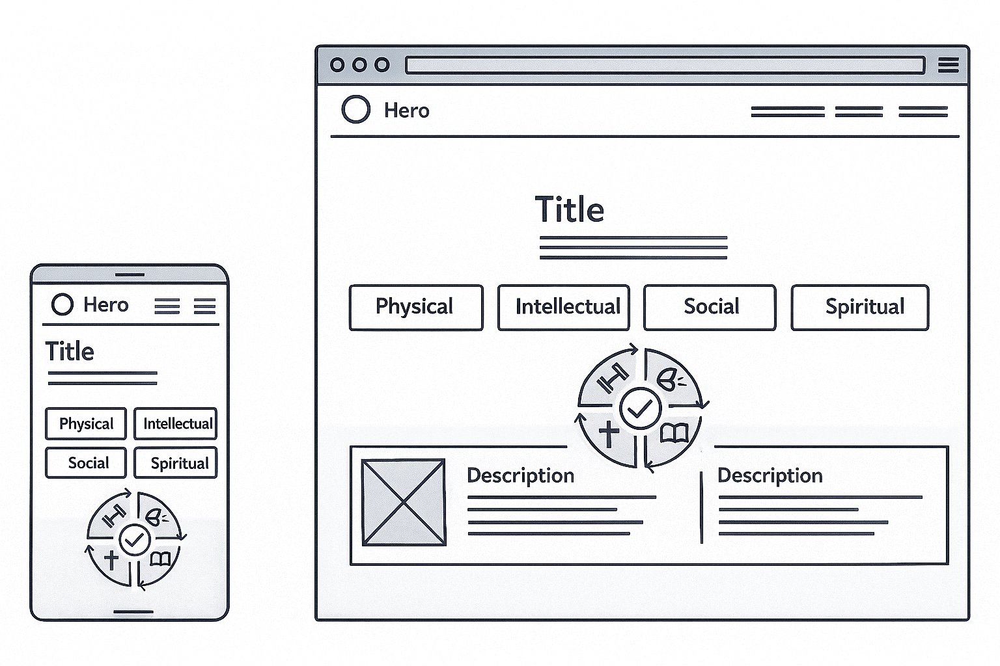

Site name
Site Name:Ascend Habits
Why the name:
First Name: Prime Habits
The project began as Prime Habits, a name focused on building
essential daily routines. It was functional but lacked identity and
emotional impact.
----
Name Evolution As the project developed, the purpose became clearer:
guiding users to grow across four life pillars — Physical,
Intellectual, Social, and Spiritual. The visual identity also evolved
into a more premium, gold-themed, upward-focused design.
----
Final Name: Ascend Habits
The name changed to Ascend Habits to reflect elevation, growth, and
continuous self-improvement. It represents rising one habit at a time.
The community is now called Ascenders.
----
Possible Domain: 'ascendhabits.com'.
Site Purpose
Ascend Habits is a personal development website designed to guide users (Ascenders) through growth in four essential life pillars: Physical, Intellectual, Social, and Spiritual. The site provides structured information, visual organization, and motivational guidance to help users understand each pillar and begin improving one habit at a time.
-
Main purpose is to:
- Present the four pillars of self-development
- Explain how each area contributes to a balanced life
- Offer visual and written descriptions of each category
- Support users in identifying habits they want to build
- Serve as an introduction to the Ascend Habits system
The website goal is simple:
👉 Help users rise 1% every day through clarity, structure, and
consistent habits.
Scenarios
1. “How can I learn what each of the four pillars means?”
2.
“Where do I start if I want to improve my daily habits?”
Primary Colors
Gold Primary — #E8C874 Used for titles, icons, highlights, borders, and important UI elements.
Gold Secondary — #D9B968 Used for subtle accents, button hover effects, and decorative elements.
Background Colors
Light Cream — #FFFDF7 Used as the main page background for a clean, soft look.
Soft Gradient (Top: #FFF6DD → Bottom: #FFFDF7) Applied in the hero section and large areas for a warm premium feel.
Supporting Colors
Gold Soft — #F2E6C9 Used for light cards, soft highlights, and elegant hover effects.
Dark Text — #1A1A1A Used for paragraphs and all primary content text.
Soft Gray Text — #5C5C5C Used for secondary text, subtitles, and descriptions.
Cinzel (Serif)
-
Usage:
- Main titles (H1, H2, H3)
- Section headers
- highlighted headings in the Hero area
Reason:
Cinzel provides a refined elegant, and
premium feel that aligns with the gold-themed identity of Ascend
Habits. It gives the site a strong visual personality
Inter (Sans-serif)
-
Usage:
- Body text
- Paragraphs
- Ui elements (navigation links, small labels, list items)
- Footer content
Reason:
Inter is clean, modern, and highly
readable, making it ideal for long-form text and user interface
components.
Wireframe
